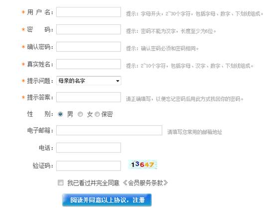
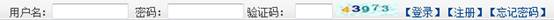
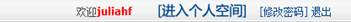
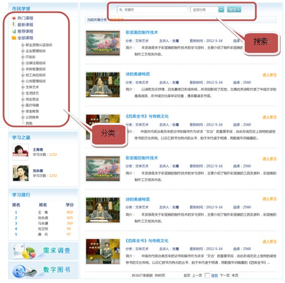
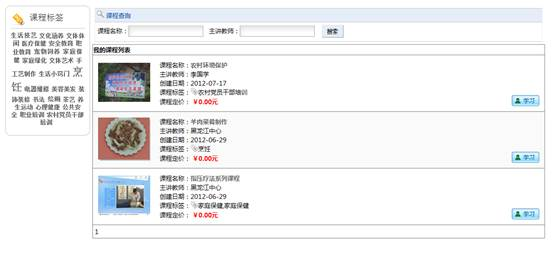
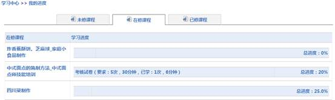

个人用户学习指南
1、用户注册、登录
唐山教育网为开放注册，社区居民可以在网站进行注册，使用网站更多功能。 在网站各栏目头部点“注册”进入个人用户信息填写页面。

个人信息包括两部分，一部分是必填项（用*号标识），一部分是选填项，所有注册必须填写必填项及同意《会员服务条款》后才可以进行注册。
用户注册后转到登录页面进行登录。

输入正确的用户名、密码及验证码即可登录，登录出现

用户可以直接进入个人空间，修改密码。
2、个人空间
参见个人空间帮助中心
3、学习小组
参见学习小组帮助中心
4、学习型社区/街道
参见学习型社区/街道帮助中心
5、课程自由学习
课程自由学习包括两部分，一部分课程不需要登录即可浏览学习，另一部课程需要用户登录后才可以浏览。用户注册、登录后即可以选择课程进行学习，在网站栏目导航中点击“市民课堂”，进入课程列表。

通过课程关键字搜索或选择课程类分类及按热门课程、最新课程、推荐课程的性质找到自己所需的课程，点击“进入学习”进入课程学习界面。
课程可以在线进行浏览、学习，评论、推荐、打分，同时还可以基于本课程创建自己感兴趣的学习小组，也可以加入别的用户已经创建的学习小组，同时用户浏览的记录保存到用户个人空间页面，用户再次浏览时即可以在自己的个人空间点击课程浏览、学习。
6. 参与项目培训
⑴项目课程学习：项目课程学习是特定用户参加具体一个社区培训项目后进行的课程学习，由教务管理员人员创建项目及组织课程，同时赋予特定用户学习此项目课程的权限（用户可以通过线下申请获得授权）。
被授权的用户即可以从项目下点击课程进入学习，也可以在登录区点击“学习平台”登录学习平台进入我的课程后选择课程学习。系统记录用户学习的时间及次数。

⑵考核：用户针对每门课程学习的时间及次数达到所要求的时间及次数时即参加课程的考核，用户在规定的时间内完成测试，时间一到电脑会自动收卷，系统经过评判后给出自测成绩。
⑶查看学习记录：点击“我的进度”进入，显示未修改课程、在线课程、已修课程三部分，包括学习的课程名称、考核的要求及用度学习的次数及时长、学习的总进度。

⑷查看资源列表：可以查看所有教师上传的（选择了共享的）资源，同时可以进行下载。